Connect.
A social platform built for real conversation. I designed it, built it, and shipped it to the App Store myself. Here is the app, screen by screen.
Download on theApp Store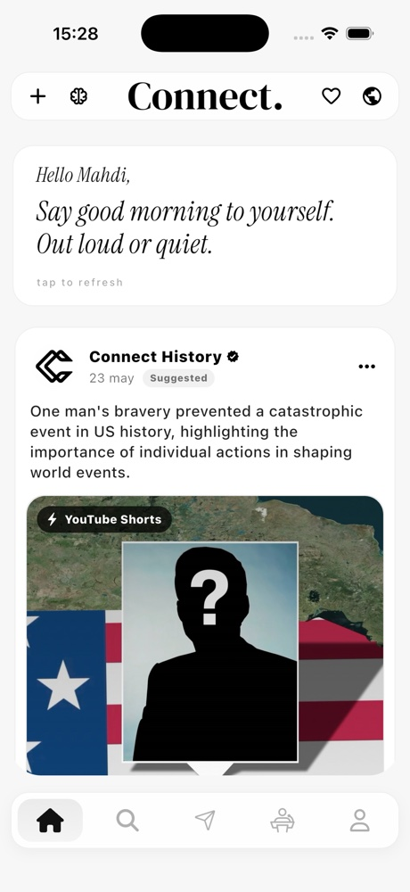
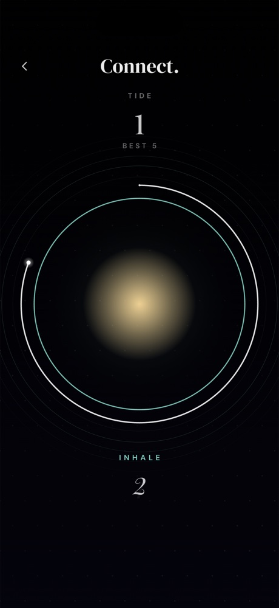
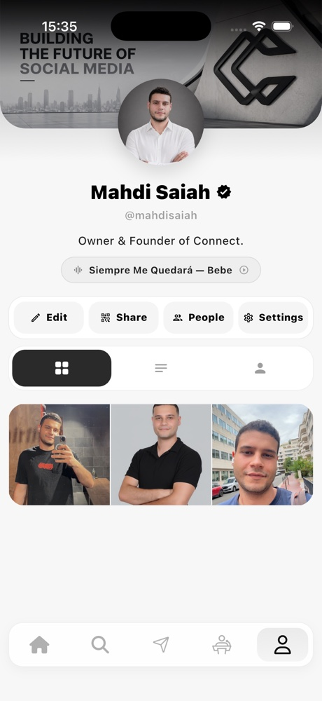
Interaction,
not consumption
Connect is a modern social platform where people share posts, stories and debates around real content. It puts interaction ahead of consumption: react, discuss, change your mind, instead of just scrolling.
Clean, immersive design from end to end. I designed every screen, worked hands-on across the app and the backend, and shipped it myself. iOS first, Android next.
Stories, and a
feed that fades
A real-time feed where posts, stories and reactions live together. Stories fade in twenty-four hours, and replies stay tied to the moment they were about.
The home feed, in real time.
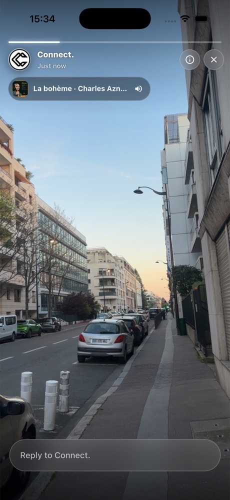
Stories that fade in twenty-four hours.
Identity built for expression, not metrics.
Debates with a
tag agent
Three to five taxonomy slugs written onto every debate by a small reasoning agent. A sibling-topic graph sends each one to the people who actually care about it.
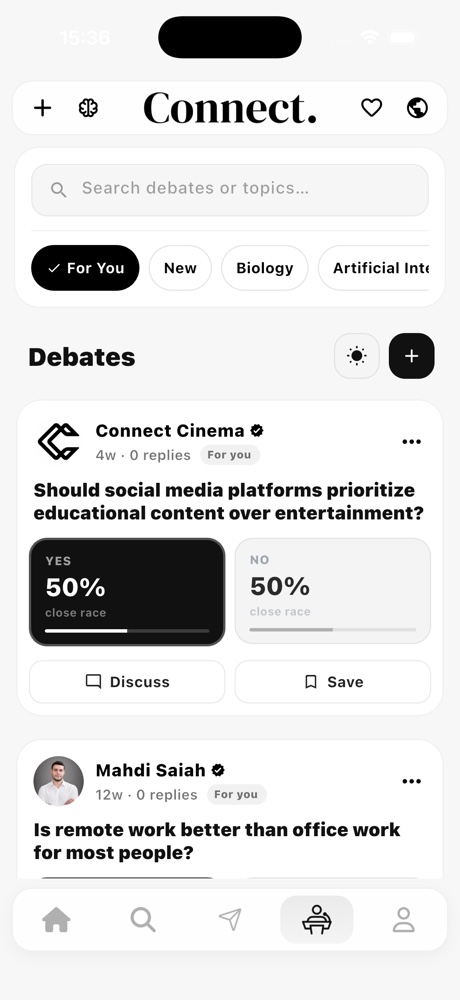
The debate centre. Every open topic in one grid.
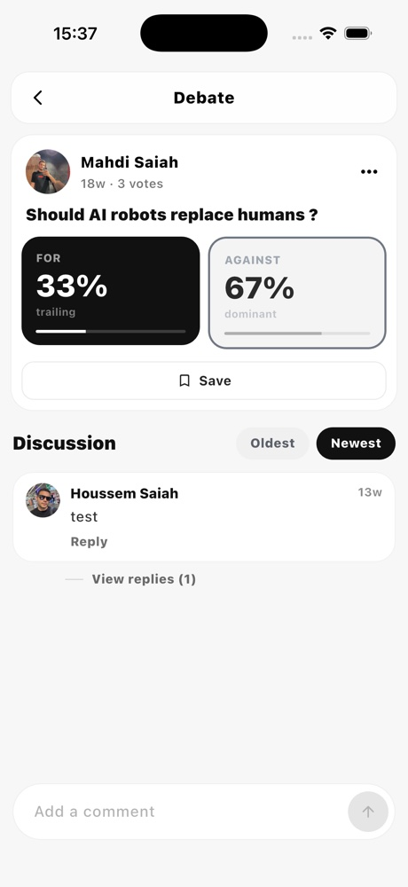
For / Against, voted live. Sides rebalance every hour.
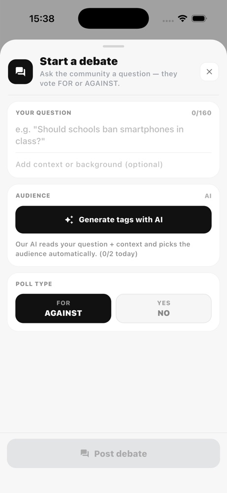
Topic detail, with debates fanned out from sibling topics.
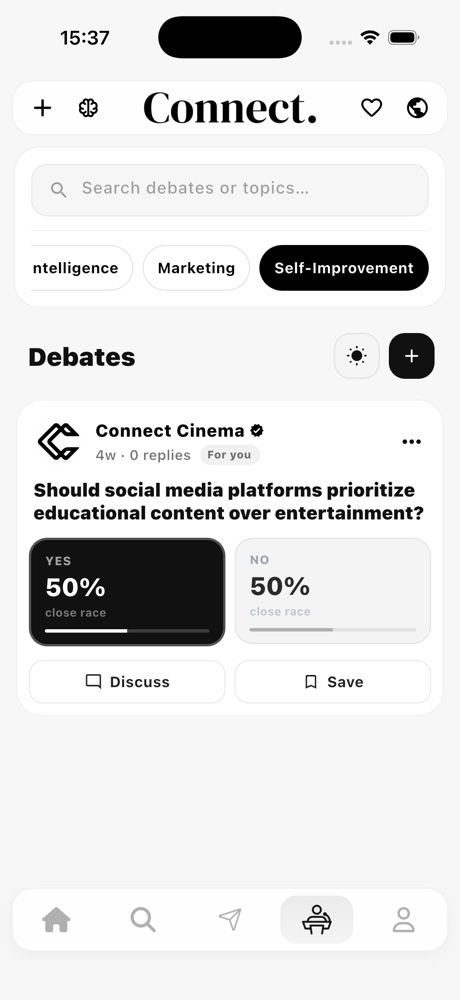
Reactions in the thread. Comments open, capped at 280 characters.
Pick what you care about.
Learn while you watch.
You tell us your interests once, from a shared taxonomy. The feed adapts. Then at the end of every video, a short quiz helps you actually keep what you watched.
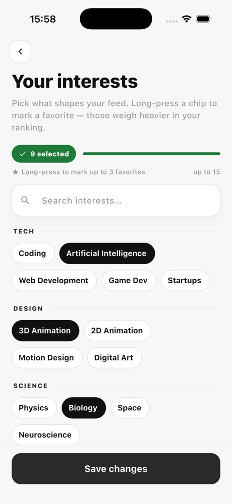
Pick your interests. No hashtags to invent, just a shared taxonomy.
The embedded video player. YouTube, Vimeo or direct links.
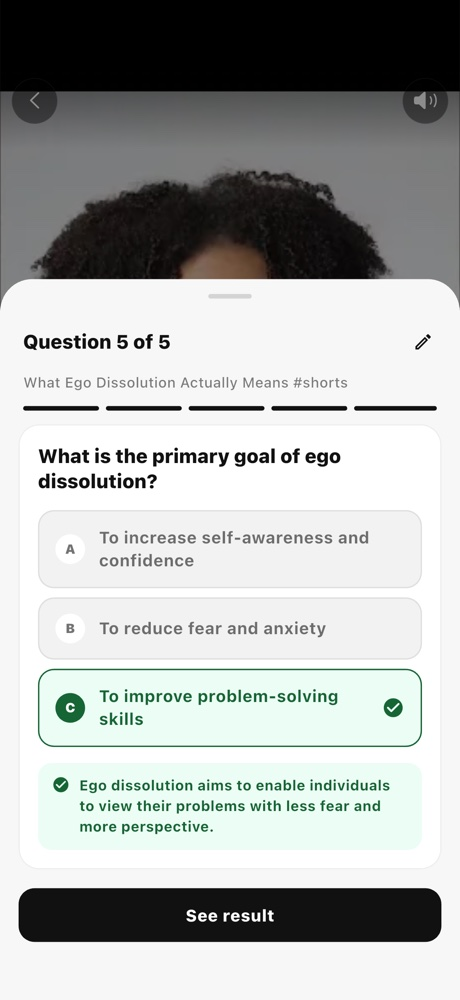
At the end, a quiz built by the AI. Three to five questions, no padding.
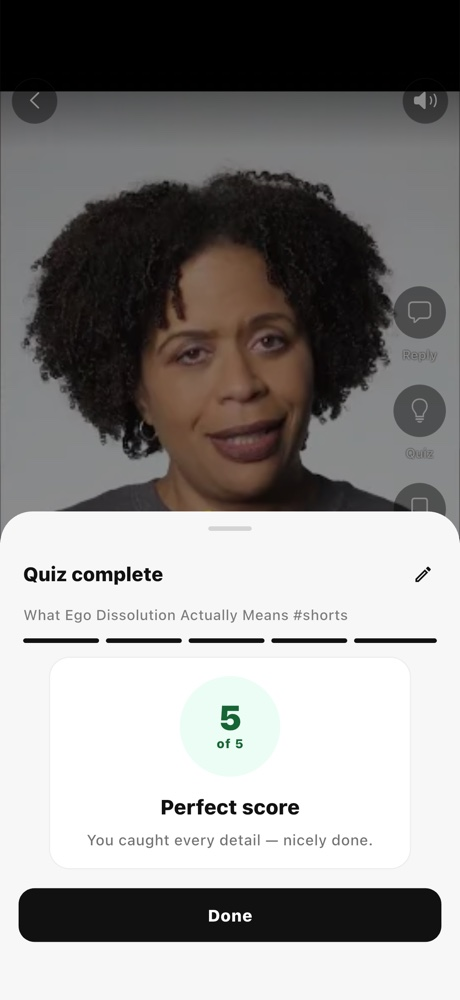
Adaptive answers. The next quiz adjusts difficulty.
Reply to a mood,
not a profile.
The map shows the people around you with their latest mood signal. One tap and you reply to the mood directly, without going through the profile dance.
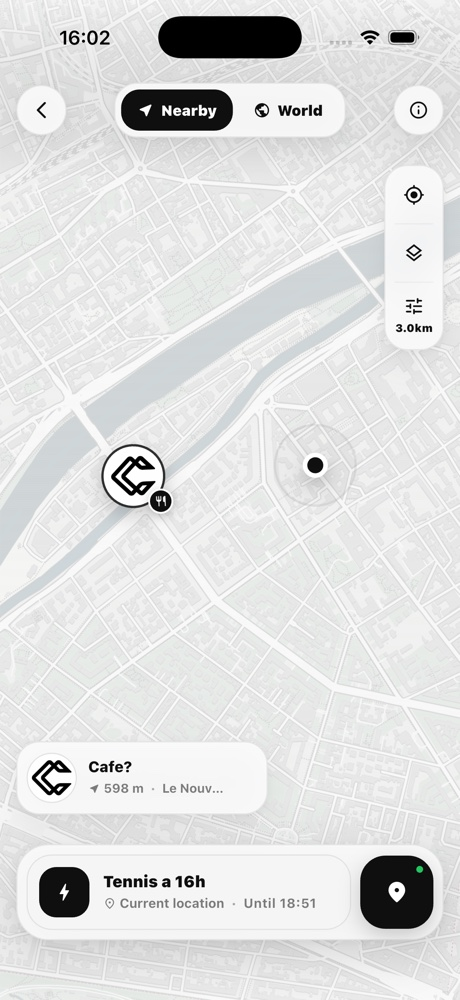
A user shows up on the map. Rough distance, recent mood.
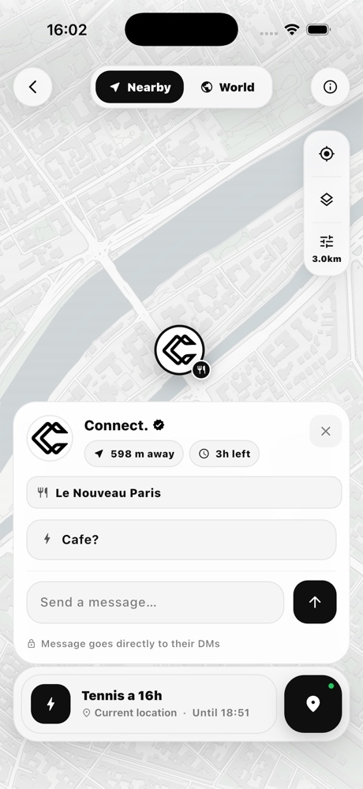
You reply to their mood. No friend request, no blocked DM. Just a line, opened.
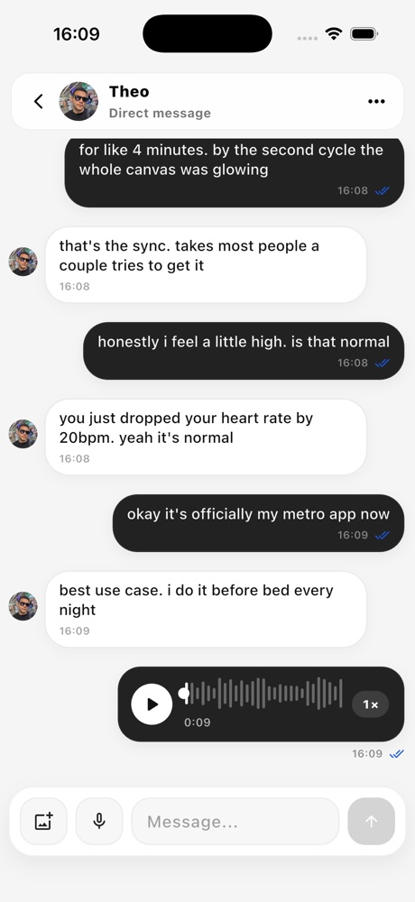
Conversations, as private as they should be.
Text, voice messages, and music sharing from your iTunes library. No read receipts unless you both want them. No presence ping unless you turn it on. Media expires by default after a week.
- Voice
- Record and scrub playback
- Music
- Share tracks from your library
- Media
- Auto-expire after seven days
- Presence
- Off by default, your choice
When the network drops,
a small room opens.
Four games. No accounts, no servers, no scores beyond what's on the screen. They run when the rest of the app can't.
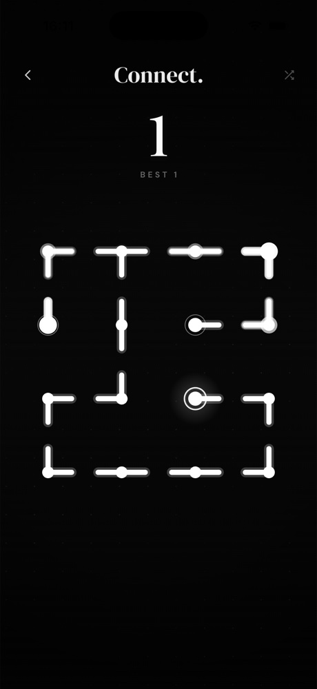
Rotate to mend the network. An endless procedural grid.
Breathe with a stranger. A clinical-grade resonance pacer at 6 BPM.
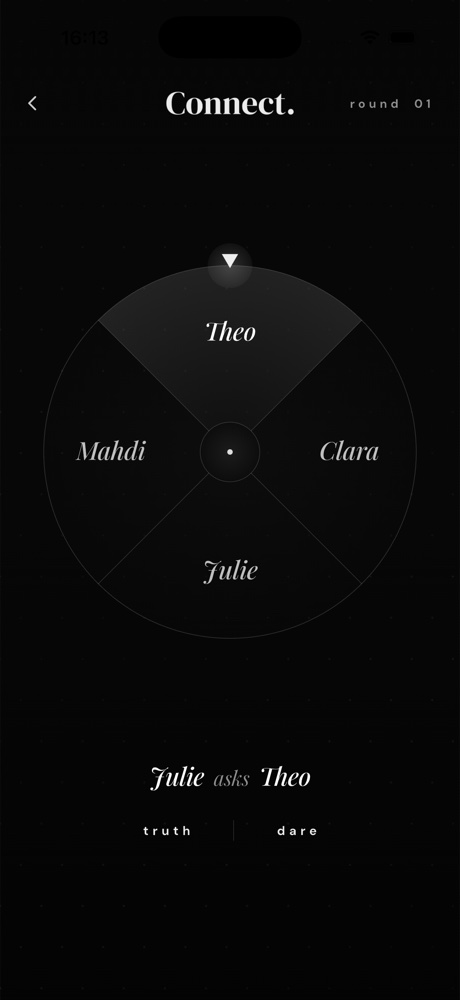
A wheel that ratchets under your thumb. Truth or dare, two to ten on one phone.
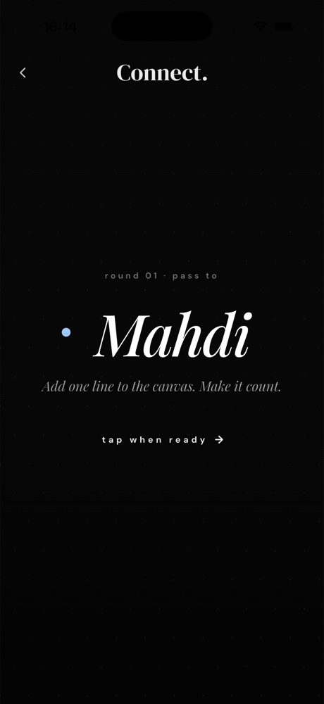
One of you knows nothing. Drawing imposter game, four to ten on one phone.
AI does the
boring work.
AI doesn't make the conversations. It cleans the floor between them.
Stack: Groq agents on llama-3.3-70b for reasoning, OpenAI text-embedding-3-small for retrieval, custom sanitisers on every output. Everything runs server-side, no models on-device.
- 01Search.
Natural-language search across the whole feed.
"Debates from last week about urban design where someone changed their mind." The query runs on the same embedding model that ranks the home feed, so what you ask for and what gets surfaced share a vocabulary.
- 02Report triage.
Every report runs through an agent first.
It tags severity (low / mid / urgent), categorises (harassment / spam / impersonation / threat), pre-fills a summary, and routes to the right reviewer. Time-to-action drops from days to under an hour for urgent cases.
- 03Verify.
A small fact-check pipeline behind quoted claims.
Statements that look quoted ("according to the WHO, 75% of...") get cross-referenced against a knowledge base. Posts get a small chip on the side: verified, disputed, or no evidence. The reader decides. No auto-removal.
- 04Tag the debates.
Three to five taxonomy slugs on every debate.
Written by a Groq agent on llama-3.3-70b, from the same set that drives your interests. A sibling-topic graph fans the post out to adjacent rooms. No hashtags, no guessing what to call your topic.
- 05Quiz the videos.
Adaptive quizzes from shorts and shared links.
Channel shorts and shared links produce three to five question quizzes. Each question goes through a strict sanitiser to avoid drifting onto things the source didn't say. The next quiz adjusts to how the last one went.
- 06Mood pair.
On the Explore map, mood signals come from your recent posts.
The matcher weighs complementary moods, not just distance. The result is fewer awkward openers and more conversations that have somewhere to go.
Connect Pro. Same app,
with room to move.
Ads keep the free tier free. Pro turns them off and opens the parts that need a bit more room. Nothing essential lives behind the paywall.
Free
€0- AllStories, Debates, Tide, Spotlight
Every core feature. Native, interstitial and house ads support the work.
- AllThe offline four
Net, Tide, Spin, Faker. On-device, identical on both tiers.
- AllDMs & voice messages
Direct messages with voice record and scrub.
- AllAdaptive video quizzes
Three to five questions, no padding, no streaks.
Pro
€4.99/mo- No adsNothing in your feed
No native, no interstitial, no app-open ads, no house promos.
- MoreHigher upload limits
Bigger stories and posts. More room for what you're making.
- EarlyEarly access
New features land in beta on Pro accounts first.
- BadgeA small Pro badge
Optional. Off by default.